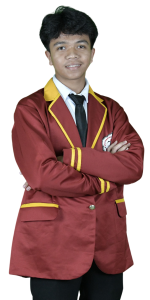
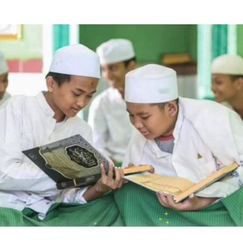
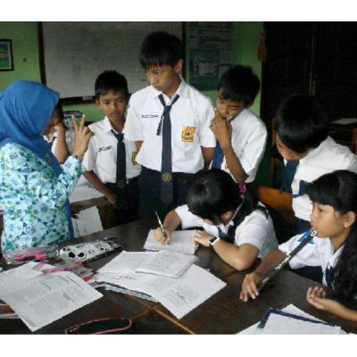
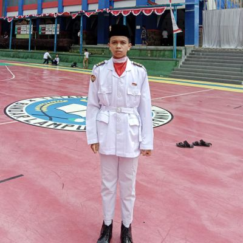

Hai, saya Dimas Aprianto, mahasiswa yang
sedang belajar menjadi programmer profesional. Saya tertarik pada teknologi
dan suka berenang untuk menjaga keseimbangan hidup.
Berikut Sekilas Keahlian Saya
Web and Graphic Design
saya mahasiswa
yang tertarik pada web design dan pemrograman. Saya suka menciptakan desain yang menarik
dan responsif.
Programing
Saya telah belajar dasar-dasar programming dan membuat beberapa
proyek kecil, termasuk desain web sederhana. Setiap proyek memberi saya pengalaman baru
untuk terus berkembang
Editor
Saya memiliki pengalaman menggunakan berbagai editor teks dan alat
pemrograman, seperti Visual Studio Code, untuk mengembangkan proyek kecil dan belajar lebih
dalam tentang coding.
Kreator Pinterest
Saya aktif sebagai kreator di Pinterest, berbagi ide kreatif dan
inspirasi visual. Saya menikmati merancang konten menarik yang dapat menginspirasi banyak
orang.
Pemilik Showroom Mobil
Saya pernah terlibat dalam pengelolaan showroom mobil, termasuk
membantu pelanggan menemukan kendaraan yang sesuai kebutuhan.
Peternak Uang
Saya memiliki minat dalam mengelola sumber daya secara efisien,
termasuk dalam hal keuangan. Saya belajar tentang investasi dan cara mengelola uang dengan
bijak, agar dapat mencapai tujuan finansial jangka panjang.
Profil
Saya Dimas Aprianto, mahasiswa yang tertarik dalam
dunia pemrograman, desain web, dan pengelolaan keuangan. Selain belajar teknologi, saya juga
aktif
mencari cara untuk mengelola dan mengembangkan potensi finansial. Saya senang berbagi ide dan
inspirasi
untuk terus berkembang.

Dimas Aprianto
WEB Designer
saat ini saya terus mengembani sebagai seorang web designer yang
berfokus pada
pembuatan desain website yang menarik dan fungsional. Saya selalu berusaha mengembangkan
keterampilan
untuk memberikan pengalaman pengguna yang terbaik. Selain itu, saya juga tertarik dengan
pemrograman dan
pengelolaan keuangan.
Tujuan saya adalah untuk terus berkembang dalam dunia desain web dan
teknologi, serta menciptakan karya-karya yang bermanfaat bagi masyarakat. Saya ingin belajar dan
menguasai berbagai keterampilan baru yang memungkinkan saya untuk membuat solusi digital yang
inovatif. Selain itu, saya berharap dapat berbagi pengetahuan dan pengalaman dengan orang lain,
serta membangun koneksi yang bermanfaat untuk perkembangan karier saya. Dengan semangat untuk
belajar dan beradaptasi, saya berkomitmen untuk mencapai tujuan saya dan memberikan dampak
positif melalui kreativitas dan teknologi.
Saya berkomitmen untuk terus menguasai teknologi,
menantang batasan-batasan digital, dan menciptakan solusi inovatif. Tujuan saya
adalah menjadi hacker yang dapat mengubah ide menjadi kenyataan, serta
memberikan dampak positif melalui pemrograman dan desain web.
Disini Tentang Pengalaman Saya selama menjadi Siswa SD
Pengalaman Saya Selama Menjadi Siswa SD
Masa-masa SD adalah salah satu fase paling berkesan dalam hidup saya. Setiap hari, saya
belajar banyak hal baru, mulai dari membaca, menulis, hingga berhitung. Saya juga aktif
mengikuti kegiatan ekstrakurikuler, seperti lomba menggambar dan bermain sepak bola
bersama
teman-teman. Salah satu momen yang paling saya ingat adalah ketika saya berhasil
memenangkan
lomba cerdas cermat tingkat sekolah. Selain itu, guru-guru saya sangat sabar dan selalu
mendorong
kami untuk berkembang. Tidak hanya soal pelajaran, saya juga belajar tentang pentingnya
berbagi,
kerja sama, dan menghargai orang lain. Masa-masa ini membentuk kepribadian saya dan
menjadi fondasi
penting untuk perjalanan hidup saya selanjutnya.
Ingin Seperti Saya?Beajarlah dari bayi hingga kau mengerti apa itu
cinta Dimazzzhere.
Date: February 20, 2014
SDN 2 Negeri Sakti
Pesantren
Pengalaman Saya Selama di Pesantren

Masa-masa di pesantren adalah salah satu periode paling bermakna dalam hidup saya. Di
sana, saya tidak hanya mendapatkan pendidikan formal seperti matematika, IPA, dan bahasa
Inggris, tetapi juga mendalami pendidikan agama yang lebih intensif, seperti tafsir
Al-Qur'an, hadits, dan pelajaran akhlak. Hidup di pesantren mengajarkan saya banyak hal,
terutama tentang kedisiplinan dan kemandirian.
Setiap hari dimulai dengan shalat subuh berjamaah, dilanjutkan dengan hafalan Al-Qur'an
sebelum memulai pelajaran sekolah. Di sore hari, ada kegiatan ekstrakurikuler seperti
belajar seni kaligrafi, pidato, atau olahraga. Salah satu pengalaman yang paling
membekas adalah saat saya mengikuti lomba pidato antar pesantren dan berhasil meraih
juara. Itu menjadi momen yang sangat membanggakan bagi saya.
Meskipun terkadang rindu rumah dan keluarga, suasana pesantren yang hangat membuat saya
merasa seperti memiliki keluarga kedua. Kami saling mendukung dalam belajar, berbagi
makanan, dan berbagi cerita. Selain itu, nilai-nilai yang diajarkan di pesantren,
seperti keikhlasan, kerja keras, dan rasa syukur, menjadi fondasi penting dalam hidup
saya hingga sekarang.
Masa-masa di pesantren ini bukan hanya tentang pendidikan, tetapi juga tentang
pembentukan karakter dan penguatan iman. Saya sangat bersyukur atas pengalaman tersebut.
Ingin Seperti saya? Kamu bisa menjadi siapapun asalkan jangan memaksa
khendak
yang sudah tuhan takdirkan PAHAM.
Date: February 20, 2017
Pondok Pesantren Darussalam
Sekolah Menengah Pertama
Pengalaman Saya Selama di Smp

Menghabiskan 1,5 tahun di SMP adalah pengalaman yang penuh warna dan kenangan. Dalam
waktu tersebut, saya belajar banyak hal, baik dari sisi akademik maupun kehidupan
sosial. Di sekolah, saya menikmati berbagai pelajaran seperti matematika, bahasa
Indonesia, dan IPA. Saya juga sangat antusias dengan pelajaran seni, di mana saya bisa
mengekspresikan kreativitas melalui menggambar atau bernyanyi.
Selain itu, saya aktif mengikuti kegiatan ekstrakurikuler. Salah satu kegiatan favorit
saya adalah olahraga, terutama sepak bola dan voli, yang menjadi momen untuk mempererat
persahabatan dengan teman-teman. Saya juga sering mengikuti lomba-lomba yang diadakan
sekolah, baik di bidang akademik maupun non-akademik. Salah satu momen yang paling
berkesan adalah ketika saya dan tim berhasil memenangkan pertandingan voli antar kelas.
Namun, tidak selalu mudah. Ada tantangan yang saya hadapi, seperti beradaptasi dengan
lingkungan baru, membangun persahabatan, dan menjaga semangat belajar di tengah jadwal
yang padat. Meski begitu, semua itu mengajarkan saya tentang kerja keras, disiplin, dan
pentingnya menghargai orang lain.
Walaupun waktu saya di SMP hanya 1,5 tahun, pengalaman tersebut telah memberikan banyak
pelajaran berharga yang masih saya bawa hingga sekarang.
Ingin Seperti saya? Kamu bisa menjadi siapapun asalkan jangan memaksa
khendak
yang sudah tuhan takdirkan PAHAM.
Date: February 20, 2018
MTS Muhammadiyah
Sekolah Menengah Atas
Pengalaman Saya Selama di SMA

Masa SMA adalah salah satu periode paling berkesan dalam hidup saya. Selama tiga tahun,
saya tidak hanya belajar secara akademis tetapi juga tumbuh sebagai pribadi yang lebih
mandiri dan percaya diri. Mata pelajaran seperti matematika, fisika, bahasa Inggris, dan
ekonomi menjadi tantangan sehari-hari, tetapi dengan usaha dan dukungan dari guru, saya
mampu mengatasinya.
Saya juga sangat aktif mengikuti kegiatan ekstrakurikuler. Bergabung dengan organisasi
seperti OSIS dan klub seni memberikan banyak pengalaman berharga. Salah satu momen yang
paling saya ingat adalah ketika saya menjadi panitia dalam acara pentas seni sekolah.
Bekerja sama dengan teman-teman untuk menyukseskan acara tersebut mengajarkan saya
tentang kerja tim, tanggung jawab, dan bagaimana menghadapi tekanan.
Selain itu, saya juga mengikuti lomba-lomba, baik di tingkat sekolah maupun luar
sekolah. Salah satu prestasi yang paling membanggakan adalah ketika saya dan tim
berhasil memenangkan lomba debat antar sekolah. Itu menjadi salah satu pencapaian yang
tak terlupakan selama SMA.
Di luar kegiatan formal, banyak kenangan indah yang saya habiskan bersama teman-teman,
seperti belajar kelompok, jalan-jalan sepulang sekolah, atau sekadar nongkrong di
kantin. Momen-momen sederhana ini menciptakan ikatan persahabatan yang sangat erat.
Tentu ada tantangan yang saya hadapi selama 3 tahun, seperti mengatur waktu antara
belajar dan kegiatan lainnya, serta menghadapi ujian yang kadang terasa berat. Namun,
semua itu memberikan pelajaran tentang disiplin, kerja keras, dan bagaimana menghadapi
kegagalan dengan kepala tegak.
Masa SMA benar-benar menjadi fondasi penting dalam hidup saya. Selain mendapatkan ilmu,
saya juga belajar tentang nilai-nilai kehidupan yang membentuk siapa saya hari ini.
Ingin Seperti saya? Kamu bisa menjadi siapapun asalkan jangan memaksa
khendak
yang sudah tuhan takdirkan PAHAM.
Date: February 20, 2020
SMAIT Baitul Jannah
Kuliah
Pengalaman Saya Selama di dunia kuliah
Mengawali perjalanan kuliah adalah salah satu babak baru yang penuh tantangan sekaligus
keseruan. Sebagai mahasiswa semester 3, saya mulai merasakan bagaimana dunia perkuliahan
benar-benar mengajarkan banyak hal, baik secara akademik maupun non-akademik.
Pada semester pertama, saya merasa penuh semangat sekaligus gugup. Lingkungan baru,
teman-teman baru, dan cara belajar yang berbeda dari sekolah membuat saya harus cepat
beradaptasi. Mata kuliah dasar seperti pengantar ilmu komputer, matematika, dan
komunikasi sangat menantang, tetapi saya berusaha untuk tetap belajar dan memahami
materi dengan baik.
Memasuki semester kedua, saya mulai merasa lebih percaya diri. Saya tidak hanya fokus
pada akademik tetapi juga aktif mengikuti organisasi kampus dan kegiatan seperti seminar
atau workshop yang relevan dengan bidang saya, yaitu desain web. Salah satu momen
berkesan adalah ketika saya berhasil menyelesaikan proyek desain pertama saya untuk
sebuah tugas, yang mendapat apresiasi dari dosen dan teman-teman.
Kini di semester 3, tantangan terasa semakin nyata. Jadwal kuliah yang semakin padat,
tugas-tugas yang lebih kompleks, serta tanggung jawab di organisasi membuat saya belajar
bagaimana mengatur waktu dengan lebih baik. Salah satu pengalaman yang paling berkesan
di semester ini adalah ketika saya bekerja sama dengan tim untuk mengembangkan sebuah
proyek kelompok, yang mengasah kemampuan kerja sama dan kreativitas saya.
Selama tiga semester ini, saya juga belajar untuk keluar dari zona nyaman. Bertemu
dengan banyak orang baru dan menghadapi berbagai situasi mengajarkan saya tentang
pentingnya fleksibilitas, komunikasi yang baik, dan ketekunan. Meskipun ada saat-saat
sulit, seperti menghadapi tugas mendadak atau ujian yang menegangkan, saya selalu
berusaha untuk tetap optimis dan terus berkembang.
Masa kuliah ini benar-benar menjadi perjalanan yang memperkaya diri saya, baik dalam hal
keilmuan maupun pengalaman hidup. Saya sangat menantikan semester-semeter berikutnya
untuk meraih lebih banyak pengalaman dan mencapai mimpi-mimpi saya.
Ingin Seperti saya? Kamu bisa menjadi siapapun asalkan jangan memaksa
khendak
yang sudah tuhan takdirkan PAHAM.